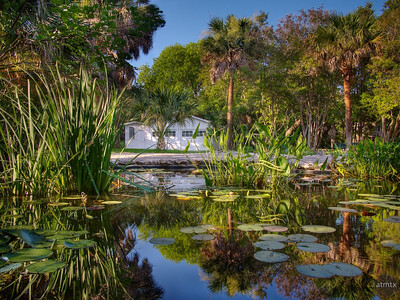
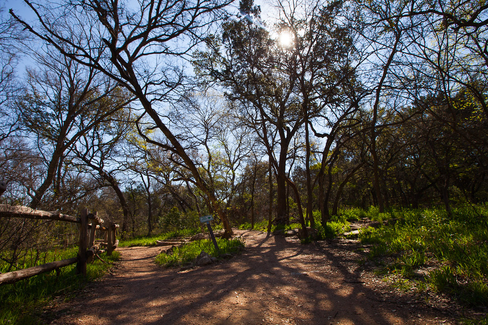

Emine Tunc, Team Leader
Harmony School of Endeavor

Diya Patel
LASA High School

Rishab Pradeep
McNeil High School

Sienna Szczesny
Bowie High School
Our favorite Austivities!

Mayfield Park and Nature Preserve
5/5 | Free | All Ages
Mayfield Park has walking trails, gardens, and peacocks for the public to enjoy.
Open Daily
https://mayfieldpark.org/mayfield-park-and-preserve-overview/

Barton Creek Greenbelt
5/5 | Free | All Ages
Barton Creek holds an array of activites, from hiking and biking to swimming in Barton Springs.
Open Daily
https://www.austintexas.org/austin-insider-blog/post/your-guide-to-navigating-austins-barton-creek-greenbelt/
Mozart's Cafe
5/5 | $$ | All Ages
Mozart Cafe offers coffee, pastries, and other treats while overlooking Lake Austin.
Open Daily
https://mozartscoffee.com/
Zilker Park
5/5 | Free | All Ages
Zilker Park is one of the most famous places in Austin to swim, paddle board, hike, bike and much more.
Open Daily
http://www.austintexas.gov/department/zilker-metropolitan-park